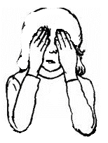

This phase will take one month of daily practice to complete and move to the next level.
Days One through Seven - Trance Training
A deep trance makes it possible to access the subconscious mind and to program it as we seee fit. The active left side of the brain blocks out any attempts to access the passive right side where the seat of the unconscious is. This is analagous to turning off the electricity to a room or a building in order to fix the wiring. The right side of the brain is where we can program our minds to manifest what we want in reality.
To get into a trance state takes practice. Remember, each of us is individual and some may find this easier than others. The important thing is to be persistent and patient with yourself. Persistence and consistency are everything here.
Performing breathing exercises before trance is highly recommended, as this will naturally calm the nervous system.
1. Sit comfortably. Do not lie down because you might fall asleep.
2. Breathe in for a count of six, hold for a count of six and then exhale for a count of six. Do this breathing until you are completely relaxed. Ideally, you should no longer be able to feel your body.
3. Imagine you are climbing down a ladder in the dark. Don’t visualize a ladder; just imagine you can feel yourself doing it. On the exhale, feel yourself climbing a step or two down the ladder. On the inhale, feel yourself holding still on the ladder.
4. Now, let go of the ladder and free fall backwards. If you get dizzy or disoriented, just bring your attention to the front of your body and this will stop. This mental falling effect, when combined with deep relaxation and mental calmness, will cause you to enter the trance state.
What is needed is a mental falling effect inside your mind. This changes the level of brain wave activity from the awake level (Beta) to the asleep level (Alpha) or the deep sleep level (Theta). Once your level of brain wave activity reaches Alpha you will enter a trance. Once you get the heavy feeling, stop the mental falling exercise. If you don’t like the ladder, imagine you are in a lift [elevator], feel yourself falling on the exhale and holding on the inhale. Or, Imagine you are a feather, feel yourself floating down on the exhale and holding still on the inhale. You need a mental falling effect to lower your level of brain wave activity.
5. Keep doing this for as long as it takes. The time it takes to enter trance will vary, depending on your experience with deep relaxation and mental calmness.
A trance feels like: Everything gets quieter and you feel like you are in a much bigger place. There is a very slight humming feeling in your body. Everything feels different. It feels a bit like putting a cardboard box over your head in the dark, you can feel the atmosphere change. It’s like everything goes fuzzy or slightly blurred. Any sharp noises, while in trance are painful.
6. To bring yourself out of the trance:
Concentrate on moving your fingers or toes. Once you can move a finger or toe, flex your hands, move your arms, shake your head, i.e., reanimate your body; and get up and walk around for a few minutes.
What this exercise does:
In order to advance in psychic power, we must train our minds. When we are in a trance state, our brain waves slow down considerably. There are two sides to the brain- the left logical/intellectual masculine side and the right creative/intuitive feminine side. The right side is the seat of the subconscious. This is the area of the mind that is open to suggestion and programming and the seat of our astral power. When the left side of our brain is active in thinking, the right side cannot be accessed. Trance states shut off the left side so we can access and program the right side (subconscious).
It takes training to be able to induce a deep trance state. Deep trance states are not always necessary, but for specific workings, they are very important. Once we train our minds to go deeper and deeper into a trance, this becomes easier and easier and takes less and less time as we become adept. The mind is like a muscle and for most people, this exercise will be an introduction to a part of the mind that has never even been accessed before.
It is *very* important to never be startled out of a trance state, especially a deep one, so make sure you are in a room or area where you are left alone and the phone is turned off. Being startled and pulled out of a trance the wrong way can be extremely painful and the pain can last for days, especially if you are doing energy work in this state.
It is normal when in a trance state for any sounds to be very painful. This is because in this state, our senses are extremely heightened.
An adept can place themselves in a deep trance within seconds at will. In closing, it is not necessary to always go into a deep trance to work with your mind. The trance state is used to train your mind. With very important or difficult workings, a deep trance is often necessary.
Days Eight through Nine - Candle Exercise
1. Light a candle and stare at the flame for 2 minutes. Make sure your attention does not wander.
2. Close your eyes and place your hands in relaxed cupped position, palms over your eyes and concentrate on the imprint of the flame in the darkness. The image will tend to move across your area of vision. Keep looking for it and bring it back and keep concentrating on it for four mintues.

3. Relax and empty your thoughts and tune into your breathing for a few minutes, concentrating only on each breath
What this exercise does:
This exercise prepares the mind for one-pointed concentration, which is so important to any psychic/astral workings. With the average person, thoughts are scattered and dissipate into nothing. With the trained mind that can concentrate intensely, the thoughts are single-pointed and focused like a laser and have power. 100% concentration makes the difference in astral workings. One's will is also developed with this exercise as a powerful will does not give into distraction. Do not become frustrated or impatient with yourself. It is normal for thoughts to creep in to distract you in the beginning. Total concentration takes time and is one of the most difficult aspects of training the mind.
Days Ten through Twenty-Four - Visualization Exercises
If you have access to a printer, print these images out:
Image 4
The above image of Satan's Sigil was used extensively in many 1920's - 30's European Satanic Lodges.
Days 10, 11 and 12
Sit comfortably and place the Image 1 in front of you. Relax and fix your gaze upon this image for 3-4 minutes. Concentrate on the image and do not let your mind wander. If your mind wanders, just bring it back to the image.
Close your eyes and visualize the image. The image may fade in and out or move around, just keep bringing it back. Do this for 3-4 minutes.
Days 13, 14 and 15
Repeat the above with Image 2
Days 16, 17 and 18
Repeat the above with Image 3
Days 19, 20 and 21
Repeat the above with Image 4
Days 22, 23 and 24
Repeat the above with Image 5
What these exercises do:
Visualization exercises build and empower our astral vision. Visualization is necessary in nearly all spellworking. With intense visualization, we direct energy into specific action in the material world. Nearly invention in the material world is preceeded by an idea. The idea is then focused upon and then put into concrete action. It is the same with energy. During a ritual or mind working, energy is raised. This energy must then be focused and applied or it just remains energy. Focused clear and intense visualization directs the energy. When one can focus uninterrupted and hold the vision of an object of choice in the mind for five minutes, one is adept at visualization.
Days Twenty-five and Twenty-six - Sense Meditation
1. Place Image 1 in front of you. Relax and calm your mind.
2. Gaze at the image for 2 minutes.
3. Now instead of visualizing the image with your eyes closed, visualize the image with your eyes open for 2 minutes. Your attention should be fixed upon the image to where you do not observe anything else in your environment.
4. Now close your eyes and visualize the image for 3-4 minutes.
What this exercise does:
This exercise further strengthens your astral vision while working on your concentration as your eyes are open. This further opens, trains and develops dormant areas of the mind and empowers them.
Days Twenty-seven through Thirty-one - Sense Training
1. Sit comfortably, close your eyes and relax your mind.
2. Choose a sound such as a clock ticking or a bell ringing or any other simple sound and focus on hearing this sound in your mind for 2 minutes. Do not see any images in your mind with this exercise- use only hearing.
3. Choose a material such as velvet or carpeting or whatever and meditate on feeling this for 2 minutes.
4. Choose an odor such as roses or a specific incense scent- again, whatever and focus on this for 2 minutes.
5. Choose a taste like salt or sugar, honey; the taste should be of something strong to start with and focus on this taste for 2 minutes.
What this exercise does:
This exercise develops the astral senses. By performing this exercise regularly, you will empower and strengthen your astral sense of hearing, touch, taste and smell.
Back to Spiritual Warfare Main Page
Back to Hell's Army 666 Main Page
© Copyright 2005, Joy of Satan Ministries;
Library of Congress Number: 12-16457

{kind=link}
{kind=link}
{kind=link}
{kind=link}
{kind=link}